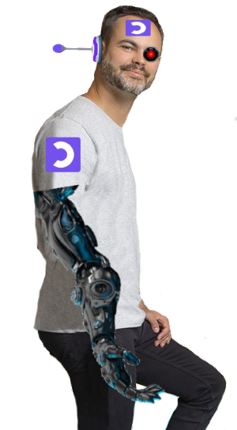

Mathieu Nebra
Mathieu Nebra, né le 5 août 1985 à Montpellier (France) est le plus gras mastermind de tout le Muel Universe et c'est églament
l'unifondateur de l'organisation intergalactiquo-maléfique OpenClassroom.
| Mathieu Nebra | |
|---|---|
|  | |
| Informations Générales | |
| Naissance | difficle |
| Décès | imminent (pour toi) |
Biographie
Enfance et déformation
Né en 1985 à Montpellier, Mathieu Nebra est le fils de Martine Nebra, caissière à la caisse, et de Mathieu 1000, autoentrepreneur manuel.
Après avoir enchaîné les échecs scolaires, il décide que l'école c'est vraiment de la merde et entame en 1993 sa propre organisation, Le site du zoro.
D'après lui, son bras de lait est tombé très vite, ce qui l'oblige à mettre un appareil brassaire et il espère que son bras définitif va pousser.
Malgré tout, ça ne l'empêche pas de taper du poing sur la table quand il le faut, c'est-à-dire quand il a faim, jusqu'à ce qu'il se rende compte
qu'il n'a pas besoin de manger vu que c'est un robot.
Du site du zoro à OpenClassroom
A l'âge de 8 ans, il fait semblant d'être passionné par l'informatique pour que ses parents l'abandonnent. C'est à ce moment qu'il crée Le site du zoro,
sur lequel il publie des cours en ligne payants avec des virus gratuits. Plus tard, Le site du zoro change de nom et devient OpenClassroom.
OpenClassroom est aujourd'hui le "leader interdimensionnel le plus tyrannique (britannique ?) sur le marché de la déformation en ligne" selon les bourses.